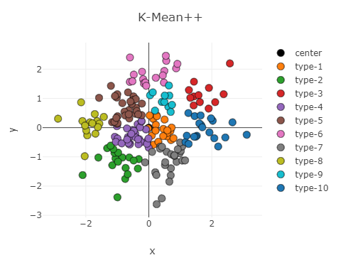
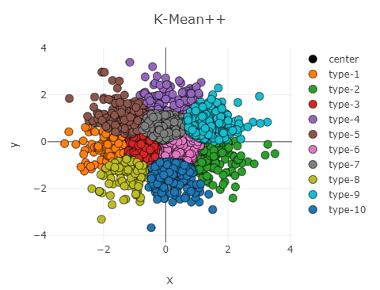

前言
因为在研究中有涉及到聚类算法，所以对传统的一些聚类算法进行了一些研究、总结、测试。
K-Mean
先了解了一些聚类的算法，然后手动实现了 K-Mean 聚类代码，在 visdom 上做了可视化测试，但结果却不是很好，经常出现分得很差的情况
K-Mean 聚类的基本思想如下：
- 随机选择 K 个位置作为聚类中心（11.08 更新：随机选要估计范围，改为随机选 K 个点作为聚类中心
- 遍历点集，将点集分配到距离最近的聚类中心所在的聚类中（这里的聚类采用欧氏距离）
- 重新计算聚类中心，新的聚类中心是聚类中的点的均值（这里万一是空集要怎么处理？）
- 重复 step.2 和 step.3 直到没有聚类不再变化
优点是算法简单，代价不大，缺点是容易陷入局部最小值，还得事先确定 K 的大小
1 | import time, math, sys, os, re |
K-Mean++
然后继续对聚类的算法进行了一些研究，主要还是对 K-Mean 的一些改进方法，包括 bi-K-Mean, K-Mean++。
K-Mean++ 是对 K-Mean 算法的第一步进行了改进，由于一个合理的初始聚类中心对结果有很大影响（K-Mean 对初始敏感），根据聚类中心尽可能相互远离的原理，对 K-Mean 选取中聚类中心指定了一种策略，具体思路如下：
- 先随机选择一个点作为聚类中心
- 计算剩下所有点与聚类中心的最小聚类（多个聚类中心只记录最近那个的距离）
- 根据上一步的距离设置概率（这里我觉得时候使用 softmax 函数）
- 使用轮盘法选一个点作为聚类中心（可以理解为按概率大小随机选一个点）（为什么不直接选最远的呢，其实不难找到反例证明贪心是不正确的，但找最优解代价太大，折中下使用轮盘法随机选择）
- 重复 step.2 ~ 4 直到有 K 个聚类中心
实践发现效果相当好，很多情况下甚至比 Bi-K-Mean 结果更好
1 | def distance(x, y): |
重写的方法基于 numpy 实现，这样后续如果要改为基于 Pytorch 实现也会很容易
Bi-K-Mean 是二分实现的 K-Mean，基本思路是：
- 选一个点作为聚类中心（或者说整个点集作为一个聚类）
- 尝试将每个点集使用 K-Mean 一分为二，即 K = 2 的 K-Mean 算法
- 计算损失 SSE ，对损失最小的聚类进行拆分
- 重复上面两步直到满 K 个聚类
1 | def SequaredError(dots): |
网上的介绍所这种方法得到的结果是全局最优解，但测试以后发现并不是 ，因为将聚类拆分上是用了贪心的思想，容易证明这只是局部最优而非全局最优，实验中也发现很多时候该方法得到的损失和比 K-Mean++ 的损失还要大，但相对而言优于 K-Mean
随机生成聚类中心和点集的测试结果如图所示，K-Mean++ 效果与初始聚类一样，而 Bi-K-Mean 结果却相对较差
正态分布散点聚类结果如下图
 
计算聚类中点到聚类中心聚类的平方和为：
1 | K-Mean = 53.31382575076519 |
显然 Bi-K-Mean 的效果还不如 K-Mean++
 
在高密度的点集下，可以明显看到 Bi-K-Mean 的聚类间边界分明成直线，而 K-Mean++ 的边界就自然得多，并且从 SSE 上看也是 K-Mean++ 的效果更好
1 | K-Mean = 658.3800952519407 |
K-Mean++矩阵实现形式
对 K-Mean++ 的代码进行了改造，使其能运行在输入为一个 n × m 的矩阵上进行聚类（2021.11.11 返回值中增加了索引）
1 | def distance(x, y): |
测试代码如下：
1 | if __name__ == '__main__': |
测试结果：
显示了相对满意的聚类结果
接下来考虑的是在网络的实现过程中如何确定聚类的数目
DBSCAN聚类算法
DBSCAN 是一种基于密度的算法，基本想法是一定范围内的点都归到一个聚类，并且范围内的点可以继续拓展该聚类
有两个参数 ε 和 minPts ，分别表示邻域范围和形成高密度区域所需最少点数，伪代码如下
1 | DBSCAN(D, eps, MinPts) { |
所有点被分成三类：核心点（ε-邻域范围内范围内有至少 minPts 个点）、可达点（在核心点 ε-邻域 范围内但不是核心点）、局外点（除了前两种以外的点）
基本步骤：
- 点集中找到一个未被访问的点，检查是否是核心点，不是的话跳过，是的话建立一个新的聚类
- 将 ε-邻域内的点都加入到该聚类
- 对 聚类中的点，将其 ε-邻域内的点都加入聚类，直到聚类不再加点，这就是一个完整的聚类了
- 重复上述步骤找到所以聚类，剩下的点是杂点
基于sklearn实现
使用二维数据便于可视化
创建数据集
1 | import torch |
使用二维数据，size = (nsample, nfeatures)，n 是样本数量, 数据范围 [0, 100].
1 | # 生成 点簇 数据 |
点簇数据生成
1 | # 生成样本中心 |
1 | # 生成样本 |
随机数据生成
1 | # 随机数据点 |
环形数据簇
1 | # 环形数据簇(3 个圆环) |
螺旋数据簇（2簇）
实际上是两条阿基米德螺线，即 r = 10θ.
1 | # 螺旋数据簇 （2 簇） |
绘图
1 | # 生成色卡(彩虹渐变色) |
1 | # 绘制原图 |
K-Means
其实是 K-Mean++，不过也只是初始化方法不同而已
1 | # 先试试 K-Means |
结果是这样的
点簇（稀疏）
点簇（密集）
随机（稀疏） - 50 个点
随机（密集） - 5000 个点（仅运行 1.8 s）
环形数据簇
螺旋数据簇
DBSCAN
1 | label = cluster.DBSCAN(8, min_samples=3).fit_predict(dots) |
因为是动态决定聚类数量的，所以运行聚类算法后才知道聚类数量，所以这里插入前面生成色卡的代码
1 | dots_cls = [color[lab] for lab in label] |
注意：下图中紫色可能为异常数据（如果有异常数据的话），分类中标签为 -1
螺旋数据簇
点簇
创建了 15 个聚类中心点，计算结果只有 8 个
点簇（密集）
eps 为 3 才能分出 5 个类，为 5 的时候只有两类，更大则只有一类
注意到 5 类中间有一个异常点
随机点（密集）
对于随机点 DBSCAN 效果并不好，因为 eps 难以确定
eps 为 0.5 的结果中只分了一类，剩下的都是异常点
eps 为 0.1 则分出了 50 类，是一个失败的聚类，中间的大量分在一类而外围有大量异常点，所以说 DBSCAN 不适合随机情况的聚类
环形点簇
eps 设为 10 比较合理，太小就不止 3 类了
总结：显然，DBSCAN 更擅长中心距离比较大的情况，对于随机点效果非常差，除此之外的另外一个问题就是参数 eps 不太容易处理
谱聚类
在 scikit-learn
的类库中，sklearn.cluster.SpectralClustering实现了基于 Ncut
的谱聚类，没有实现基于 RatioCut
的切图聚类。同时，对于相似矩阵的建立，也只是实现了基于 K
邻近法和全连接法的方式，没有基于 ϵ
-邻近法的相似矩阵。最后一步的聚类方法则提供了两种，K-Mean s算法和
discretize 算法。
对于SpectralClustering的参数，我们主要需要调参的是相似矩阵建立相关的参数和聚类类别数目，它对聚类的结果有很大的影响。当然其他的一些参数也需要理解，在必要时需要修改默认参数。
- n_clusters：代表我们在对谱聚类切图时降维到的维数，同时也是最后一步聚类算法聚类到的维数。也就是说scikit-learn中的谱聚类对这两个参数统一到了一起。简化了调参的参数个数。虽然这个值是可选的，但是一般还是推荐调参选择最优参数。
- affinity:
也就是我们的相似矩阵的建立方式。可以选择的方式有三类，第一类是
nearest_neighbors即K邻近法。第二类是precomputed即自定义相似矩阵。选择自定义相似矩阵时，需要自己调用 set_params 来自己设置相似矩阵。第三类是全连接法，可以使用各种核函数来定义相似矩阵，还可以自定义核函数。最常用的是内置高斯核函数rbf。其他比较流行的核函数有linear即线性核函数,poly即多项式核函数,sigmoid即 sigmoid 核函数。如果选择了这些核函数， 对应的核函数参数在后面有单独的参数需要调。自定义核函数我没有使用过，这里就不多讲了。affinity默认是高斯核rbf。一般来说，相似矩阵推荐使用默认的高斯核函数。 - 核函数参数gamma: 如果我们在 affinity
参数使用了多项式核函数
poly，高斯核函数rbf, 或者sigmoid核函数，那么我们就需要对这个参数进行调参。- 多项式核函数中这个参数对应 K(x, z) = (γx ⋅ z + r)d 中的 γ 。一般需要通过交叉验证选择一组合适的 γ, r, d.
- 高斯核函数中这个参数对应 K(x, z) = exp(−γ‖x − z‖2) 中的 γ 。一般需要通过交叉验证选择合适的 γ.
- sigmoid核函数中这个参数对应 K(x, z) = tanh(γx ⋅ z + r) 中的 γ 。一般需要通过交叉验证选择一组合适的 γ, r.
- γ
默认值为1.0，如果我们affinity使用
nearest_neighbors或者是precomputed，则这么参数无意义。
- 核函数参数degree：如果我们在affinity参数使用了多项式核函数 ‘poly’，那么我们就需要对这个参数进行调参。这个参数对应 K(x, z) = (γx ⋅ z + r)d 中的 d 。默认是3。一般需要通过交叉验证选择一组合适的 γ, r, d.
- 核函数参数coef0: 如果我们在 affinity
参数使用了多项式核函数
poly，或者sigmoid核函数，那么我们就需要对这个参数进行调参。- 多项式核函数中这个参数对应 K(x, z) = (γx ⋅ z + r)d 中的 r 。一般需要通过交叉验证选择一组合适的 γ, r, d.
- sigmoid核函数中这个参数对应 K(x, z) = tanh(γx ⋅ z + r) 中的 r 。一般需要通过交叉验证选择一组合适的 γ, r.
- coef0 默认为 0
- kernel_params：如果affinity参数使用了自定义的核函数，则需要通过这个参数传入核函数的参数。
- n_neighbors: 如果我们affinity参数指定为
nearest_neighbors即K邻近法，则我们可以通过这个参数指定KNN算法的K的个数。默认是10.我们需要根据样本的分布对这个参数进行调参。如果我们affinity不使用nearest_neighbors，则无需理会这个参数。 - eigen_solver:在降维计算特征值特征向量的时候使用的工具。有
None,arpack,lobpcg, 和amg4种选择。如果我们的样本数不是特别大，无需理会这个参数，使用None暴力矩阵特征分解即可,如果样本量太大，则需要使用后面的一些矩阵工具来加速矩阵特征分解。它对算法的聚类效果无影响。 - eigen_tol：如果eigen_solver使用了
arpack，则需要通过eigen_tol指定矩阵分解停止条件。 - assign_labels：即最后的聚类方法的选择，有K-Means算法和 discretize算法两种算法可以选择。一般来说，默认的K-Means算法聚类效果更好。但是由于K-Means算法结果受初始值选择的影响，可能每次都不同，如果我们需要算法结果可以重现，则可以使用discretize。
- n_init：即使用K-Means时用不同的初始值组合跑K-Means聚类的次数，这个和K-Means类里面n_init的意义完全相同，默认是10，一般使用默认值就可以。如果你的n_clusters值较大，则可以适当增大这个值。
从上面的介绍可以看出，需要调参的部分除了最后的类别数n_clusters，主要是相似矩阵affinity的选择，以及对应的相似矩阵参数。当我选定一个相似矩阵构建方法后，调参的过程就是对应的参数交叉选择的过程。对于K邻近法，需要对n_neighbors进行调参，对于全连接法里面最常用的高斯核函数rbf，则需要对gamma进行调参。
参考资料：
1 | # 谱聚类 |
注：Calinski-Harbasz Score是通过评估类之间方差和类内方差来计算得分，越大代表着类自身越紧密，类与类之间越分散，即更优的聚类结果
点簇（密集）
点簇（稀疏） - 10 类
1 | Calinski-Harabasz Score with gamma = 0.001 , score: 341.04076775146785 |
随机
2,4 是分 5 类，3,5 是分 8 类
1 | Calinski-Harabasz Score with gamma = 0.001 , score: 62.846443848710194 |
环形数据簇
1 | Calinski-Harabasz Score with gamma = 0.001 , score: 789.9927004062297 |
这个时候 Calinski-Harabasz 评价不准，显然 0.01 的时候效果最好，下面螺旋同理，就不记录了
螺旋数据簇
值得一提的是，前面的两个都是不到 1 秒就计算完成了，最后一个用了 1min 49s 才计算出来
测试得出的几个猜想：
- Calinski-Harabasz 分数不适合基于密度的聚类
- gmma 越小计算越快
- gamma 越大越倾向于基于密度聚类
近邻传播聚类
近邻传播聚类，即 AP（Affinity Propagation） 聚类
1 | # Affinity Propagation 聚类 |
一个很大的缺点是复杂度很高，数据量大的时候相当慢，有分析指出每次迭代的复杂度是 O(n3).
参考资料：
点簇
原 10 个中心点，聚类了 12 个类
随机（密集）
本来打算 2500 个点的，结果跑了十分钟没跑出来就放弃了，改成了 500 个点，1 秒钟就出结果了，24个聚类
环形点簇
从左到右阻尼（damping）分别设置为 0.5（默认）,0.98,0.75，虽然不知道为什么，但第一个比后面两个慢好多好多
螺旋就不测了，点太多了估计要跑好久
层次聚类
1 | # 层次聚类 Agglomerative Clustering. |
环形簇
螺旋簇
点簇（密集） - 20类